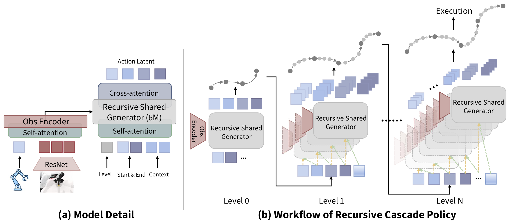
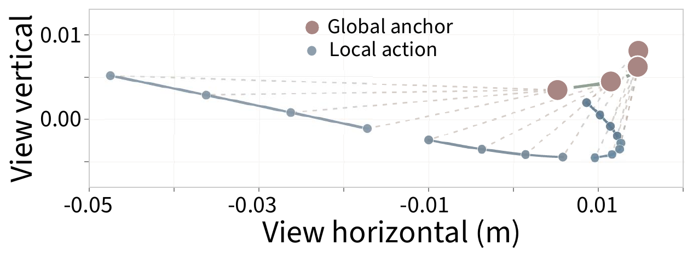
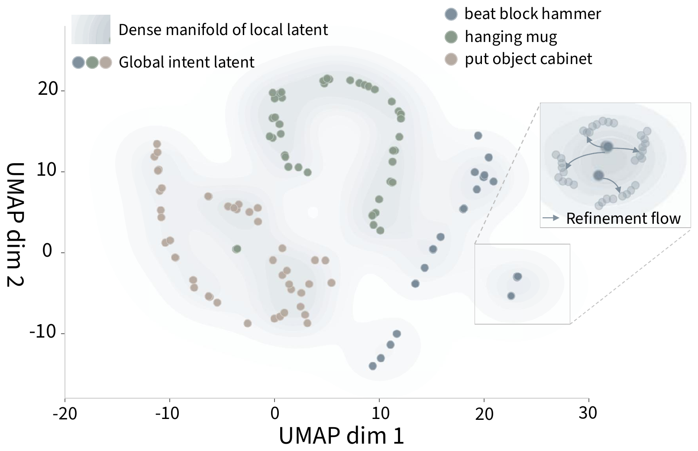
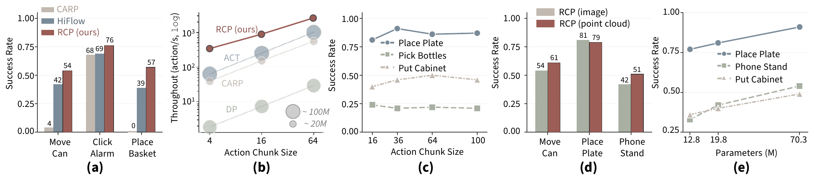
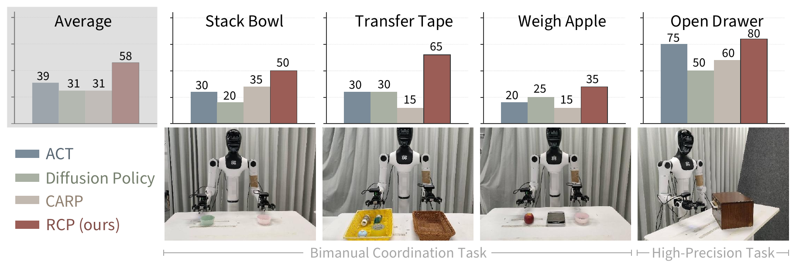

Sketch globally, refine recursively.
Robot policies usually trade speed for stability — autoregressive models are slow and drift over time, diffusion models are accurate but expensive. RCP borrows from how the brain plans movement: it first sketches a coarse trajectory from a few anchor points, then recursively fills in the gaps with one small, weight-shared Transformer. Because the in-between segments are independent, RCP decodes them in parallel — staying fast and stable with just 19M parameters.
Abstract
Current generative visuomotor policies often face a trade-off between inference speed and execution stability. Autoregressive architectures are constrained by sequential decoding latency and compounding errors, whereas diffusion models demand computationally expensive iterative denoising. We introduce the Recursive Cascade Policy (RCP), an architecture inspired by human hierarchical cognitive control that frames action generation as recursive temporal infilling directly within explicit physical action space. A single weight-shared Transformer first predicts sparse boundary anchors to sketch a global trajectory, then recursively populates the temporal gaps. By conditioning each step on its immediate geometric anchors and a hierarchically propagated latent, RCP renders intermediate trajectory segments conditionally independent. This structural prior restricts the attention mechanism to a constant-length context, decoupling attention complexity from the total action horizon and unlocking highly efficient parallel decoding. With only 19M parameters, less than one-quarter the size of ACT and Diffusion Policy, RCP achieves superior performance across diverse simulation and real-world tasks. By grounding generation in local geometric boundaries rather than unbounded histories, RCP maintains robust temporal coherence, demonstrating recursive cascades as an efficient and scalable approach for robotic policies.
Small model, high-precision control.
- 0parameters — 4–5× smaller than ACT / DP
- 0ManiSkill 3 avg — with 10× less data
- 0RoboTwin 2.0 avg — beats π₀ (38.2%)
- 0real-world avg — +19% over baselines
- 0throughput @16-chunk — ~88× faster than DP
One shared generator, applied recursively.
A single 6M-parameter generator is reused at every level of a hierarchical action tree — from a sparse global sketch down to dense, executable motion.

- 1
Observe
A ResNet encodes the camera image; proprioception is tokenized; self-attention fuses them into unified observation tokens.
- 2
Sketch · Level 0
The shared generator predicts a sparse set of boundary anchors — a global trajectory sketch of the whole motion.
- 3
Recurse
Each adjacent anchor pair becomes new start/end tokens; the same generator infills finer waypoints between them. Repeat to Level N.
- 4
Parallel decode
Same-level segments are conditionally independent, so they're generated in one batched pass — O(L) latency, constant-length attention.
What the recursion actually learns.
Hierarchical action instantiation
A predicted trajectory unrolled across recursive levels. The model first places a few sparse global anchors (rose) that outline the macroscopic motion, then recursively infills dense local actions (slate) in the gaps between them — making the gist-to-detail refinement explicit in physical space.

Latent action space (UMAP)
A UMAP projection of the generator's latents. Sparse global-intent nodes flow along a consistent refinement direction into the dense manifold of local actions (inset) — direct evidence that RCP progressively grounds high-level intent into precise, executable motion.

Better control, across sim and the real world.
RoboTwin 2.0 — bimanual manipulation (success rate)
| Method | beat block hammer | hanging mug | place dual shoes | place phone stand | place bread basket | put object cabinet | place fan | place cont. plate | move can pot | pick div. bottles | Avg |
|---|---|---|---|---|---|---|---|---|---|---|---|
| Diffusion Policy | .42 | .08 | .08 | .13 | .14 | .42 | .03 | .41 | .39 | .05 | .22 |
| ACT | .56 | .07 | .09 | .02 | .06 | .15 | .01 | .72 | .22 | .07 | .20 |
| π₀ | .43 | .11 | .15 | .35 | .17 | .68 | .20 | .88 | .58 | .27 | .38 |
| RDT | .77 | .23 | .04 | .15 | .10 | .33 | .12 | .78 | .25 | .02 | .28 |
| RCP (ours) | .81 | .31 | .20 | .42 | .33 | .40 | .26 | .81 | .54 | .24 | .43 |
ManiSkill 3 (success rate)
| Method | Demos | PickCube | PushCube | StackCube | Avg |
|---|---|---|---|---|---|
| BC | 100 | .00 | .00 | .00 | .00 |
| BC | 1000 | .03 | .81 | .00 | .28 |
| ACT | 100 | .28 | .30 | .33 | .30 |
| ACT | 1000 | .98 | .89 | .80 | .89 |
| Diffusion Policy | 100 | .76 | .41 | .61 | .59 |
| Diffusion Policy | 1000 | 1.00 | .86 | .81 | .89 |
| DP + VGGT | 1000 | .96 | .91 | .65 | .84 |
| PAR | 1000 | .73 | 1.00 | .48 | .74 |
| OpenVLA | 1000 | .08 | .08 | .08 | .08 |
| Octo | 1000 | .00 | .00 | .00 | .00 |
| RDT | 1000 | .77 | 1.00 | .74 | .84 |
| RCP (ours) | 100 | .79 | 1.00 | .99 | .93 |
Comprehensive evaluation

Real-world — TienKung 2.0 dual-arm humanoid

Watch RCP vs. the baselines.
Same task, same robot. Pick a task and a baseline; toggle successes and failures. Clips are from the TienKung 2.0 dual-arm humanoid.
Simulation rollouts.
RCP executing the benchmark tasks in RoboTwin 2.0 and ManiSkill 3 — the same tasks scored in the tables above.